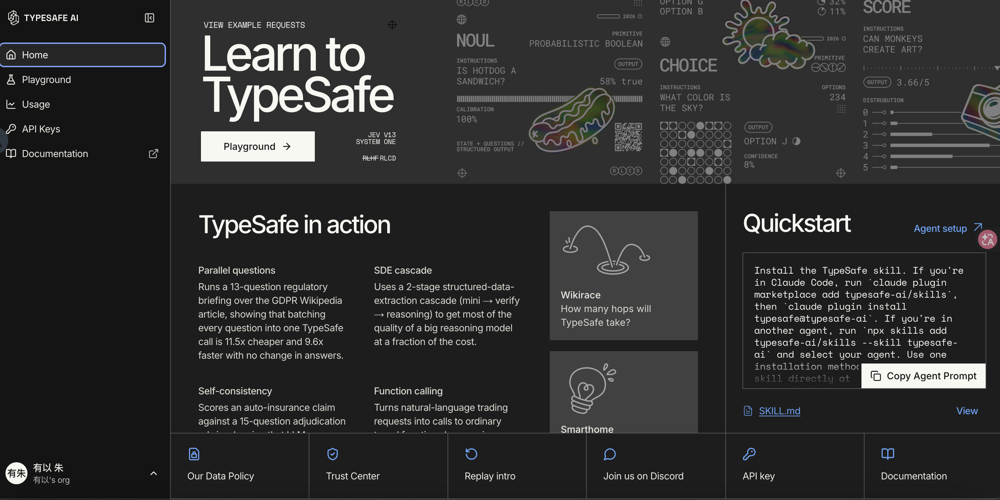
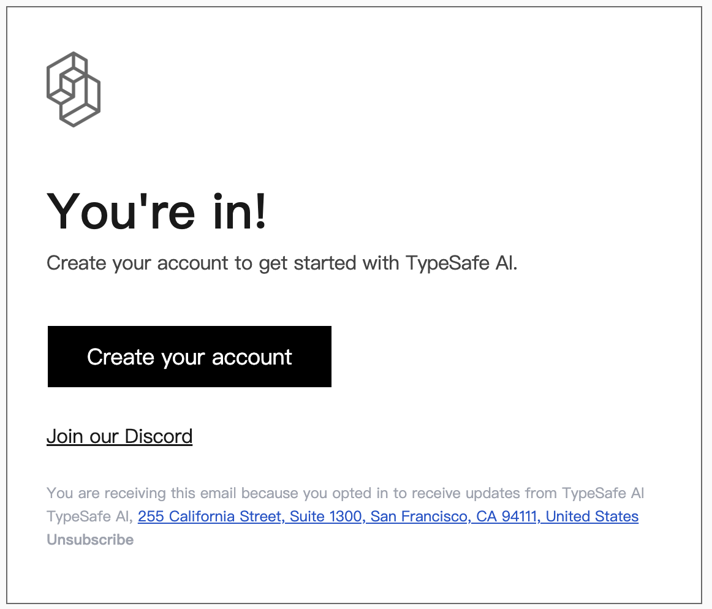
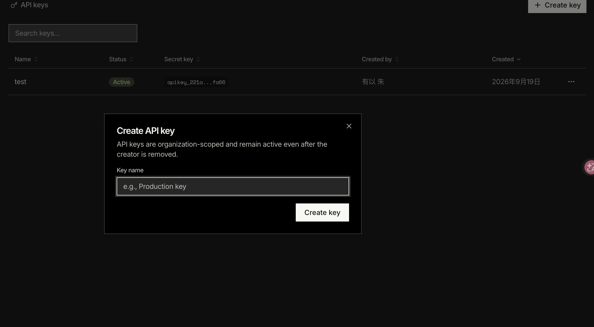
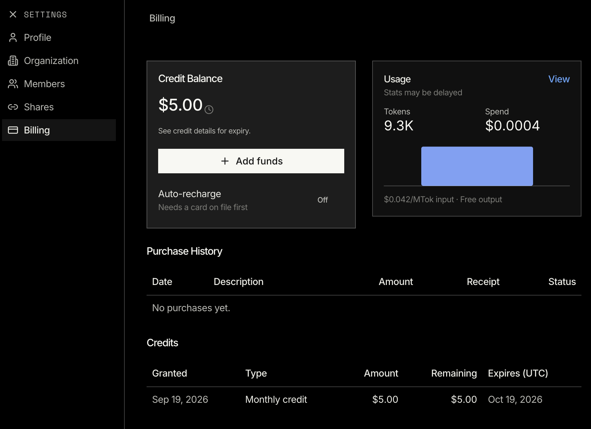
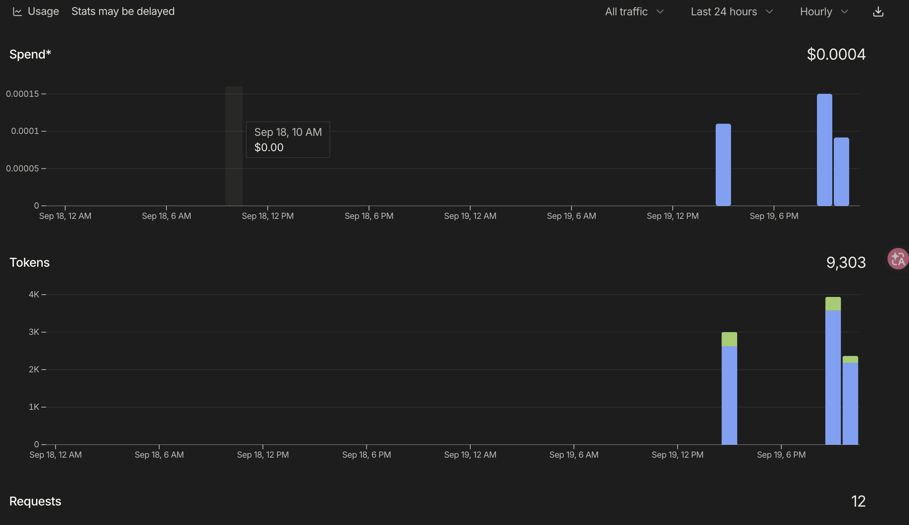

Jev 实测
卡尼曼的"快思考"，被做成了一个比 GPT 更克制的 AI 模型
它不写一个字，不生成代码，也不解释自己的推理过程。你给它一段文本，它返回一个结构化判断。这听起来怪，但用起来会发现它比 GPT 克制得多 —— 本文从概念到上手 6 步，把 TypeSafe 的 System One 模型 Jev 拆给你看。

TYPESAFE AI · CONSOLE · 2026/09/19
最近半年，做 Agent 的朋友有个共识：让大模型去做分类、路由、情感判断，又贵又慢，还经常一本正经胡说八道。
让 GPT 判断"这条用户留言是不是要退款"，你要写 Prompt、设 JSON Schema、再用 few-shot 稳住输出格式，最后还要 try-except 兜底。一套下来延迟 1-2 秒，单次成本几美分，判断质量还要看运气。
有没有更省心的做法？最近发现 TypeSafe 推了一个叫 Jev 的模型，定位挺反常识。它不写一个字，不生成代码，也不解释推理。你给它一段文本，它只返回一个结构化判断：{"choice": "billing", "noul": 0.92}。
GPT 是写手，Jev 是裁判。
两者各干各的活。
— 本文核心观点
It Does Not Replace GPT
Jev 是 TypeSafe 第一个 System One 模型，名字来自卡尼曼《思考，快与慢》里的 System 1——快思考、直觉、本能。
LLM 像 System 2：慢、会推理、要解释。System One 像 System 1：快、专注，只回答一个窄问题。
具体差别
- 输入：自然语言文本（目前不支持图像、音频、视频）
- 输出：结构化答案 + 概率 + 置信度，不是自然语言
- 能力边界：判断、选择、打分；不写回复、不生成代码、不解释
Three Primitives
Jev 的能力被抽象成三个原语（primitives）。每个原语都带 置信度——这是 LLM 拿不到的东西。
置信度意味着你可以写规则："< 0.7 转人工审核，≥ 0.9 直接放行"。判断边界从"猜"变成了"按阈值分流"。Jev 不会告诉你"为什么是 billing"，但它会告诉你"我是 91% 确定"。这种克制，反而更适合接进生产系统。
Choice · 从候选里选一个
客服留言路由、邮件分类、订单分桶。返回值包含 choice、每个选项的 probabilities、整体的 confidence。
# Choice 原语：从三个团队里挑一个 Choice( instructions="这条工单应该由哪个团队处理？", criteria={ "billing": "支付、发票、退款", "technical": "Bug、宕机、集成", "sales": "报价、升级、新账号" } )
Score · 在有序级别上打分
情感强度、紧急程度、风险分级。返回值 score 是在 levels 上的概率加权位置，可落在级别之间。
# Score 原语：客户情绪从 calm 到 very angry Score( instructions="客户情绪有多强烈？", criteria=["Calm", "Frustrated", "Very angry"] )
Noul · 判断 yes/no
风控、内容审核、退款请求、退订意图。返回 0-1 的概率值，0.95 表示模型 95% 确定这是 yes。
# Noul 原语：yes/no 判断，返回 0-1 概率 Noul( instructions="这条留言是否在申请退款？", criteria={ "true": "明确表达退款或投诉意图", "false": "只是咨询或一般反馈" } )
From Zero to First Call
下面这 6 步按顺序操作就能跑通第一次调用。每一步都告诉你在哪点、点啥、可能踩的坑。
浏览器打开 typesafe.ai，找 Join Waitlist 按钮（一般在右上角或页面中部），填邮箱、姓名、用途（可写"个人开发者，做 Agent"），提交后等邀请邮件。
目前公开信息显示通常 1-2 天内会收到邀请邮件，邮件里带 Console 访问入口。

实操截图 · 入选邮件 · Create your account 入口 · 2026/09/19
打开 console.typesafe.ai，用邀请邮件方式登录（一般是邮箱 + 一次性验证码）。进入 Console 后找 API Keys（路径一般是 Settings → API Keys），点 Create New Key，起个名字（建议按用途命名，比如 local-dev、prod-agent-1）。
生成后会立刻显示一串以 sk- 开头的完整 Key，立刻复制保存。关掉页面就再也看不到了，只能重新生成。

实操截图 · API Keys 页 + Create key 弹窗 · 2026/09/19
.env 并加进 .gitignore。
macOS / Linux（zsh、bash）：
# 加进 ~/.zshrc 或 ~/.bashrc，所有终端会话都能用 echo 'export TYPESAFE_API_KEY="sk-你刚才复制的key"' >> ~/.zshrc source ~/.zshrc # 验证是否生效 echo $TYPESAFE_API_KEY
Windows PowerShell：
[System.Environment]::SetEnvironmentVariable('TYPESAFE_API_KEY','sk-你刚才复制的key','User')
官方提供 Python 和 JavaScript/TypeScript 两套 SDK。Python 要求 3.10+。
# 用 uv（如果项目用 uv） uv add typesafe-sdk # 或用 pip pip install typesafe-sdk
npm install @typesafe-ai/sdk
TYPESAFE_API_KEY 环境变量，默认调用 jev-latest 模型，代码里不用写 Key。
新建 test_jev.py：
from typesafe_sdk import AsyncTypeSafeClient, Choice, Noul, Score import asyncio async def main(): async with AsyncTypeSafeClient() as client: response = await client.system_one( state={ "ticket": "我已经等了 5 天，钱还没退，到底什么意思" }, questions={ "is_refund": Noul( instructions="这条留言是否在申请退款？" ), "tone": Choice( instructions="留言情绪属于哪种？", criteria={ "calm": "平静、就事论事", "frustrated": "不满、带催促", "angry": "愤怒、威胁、辱骂" } ), "urgency": Score( instructions="紧急程度", criteria=["可以等", "本周内", "今天", "立刻处理"] ) } ) # 拿到结构化结果 print("是否退款:", response.nouls["is_refund"].noul) print("情绪:", response.choices["tone"].choice) print("紧急度:", response.scores["urgency"].score) asyncio.run(main())
跑一下：
python test_jev.py
如果输出类似 是否退款: 0.94 / 情绪: frustrated / 紧急度: 2.6——恭喜，Jev 已经跑起来了。

实操截图 · Billing 页面 · 月度 $5 Credit + 已消耗统计 · 2026/09/19

实操截图 · Usage 图表 · 12 次调用 / 9.3K tokens / $0.0004 · 2026/09/19
401 Unauthorized，检查 TYPESAFE_API_KEY 是否正确导出，新开一个终端窗口再试（环境变量改了之后旧窗口不会自动刷新）。不想装 SDK？直接用 curl：
curl -s https://api.typesafe.ai/v1/systemone \ -H "Authorization: Bearer $TYPESAFE_API_KEY" \ -H "Content-Type: application/json" \ -d '{ "model": "jev-latest", "state": "我已经等了 5 天，钱还没退，到底什么意思", "questions": { "is_refund": { "type": "noul", "instructions": "这条留言是否在申请退款？" } } }'
返回的 JSON 里直接拿 answers.is_refund.noul 这个数字。
到这里 Jev 已经在本地能跑了。下一步是接进 Agent 工作流。三种常用模式：
模式 A：作为 Agent 内部的"判断模块"
# 伪代码：典型 Agent 循环里的一个判断步骤 async def agent_step(user_input, context): # 用 Jev 做几个并行判断 result = await jev_client.system_one( state={"user_input": user_input, "history": context.history}, questions={ "need_tool": Noul(instructions="是否需要调用工具？"), "tool_choice": Choice( instructions="如果需要，用哪个工具？", criteria={ "search": "联网搜索", "code": "执行代码", "none": "不需要" } ), "risk_level": Score( instructions="风险等级", criteria=["低", "中", "高"] ) } ) # 用置信度做分流 if result.nouls["need_tool"].noul < 0.5: return await llm_reply(user_input) # 走 LLM 正常回复 elif result.choices["tool_choice"].confidence > 0.8: return await execute_tool(result.choices["tool_choice"].choice) else: return await escalate_to_human(context) # 置信度不够，转人工
模式 B：配合 Coding Agent（Claude Code / Cursor / Cline 等）
# 在项目目录执行，一键安装 TypeSafe skill npx skills add typesafe-ai/skills --skill typesafe-ai # 然后在 Coding Agent 里说： # "用 TypeSafe skill 把 Jev 接进这个项目，让客服分类和退款判断走 Jev。"
Coding Agent 会自己读文档、写代码、跑测试。
模式 C：作为 LLM 的预筛选
# 伪代码：先用 Jev 过滤掉显然不需要 LLM 的请求 filter_result = jev_client.system_one( state={"request": user_input}, questions={ "is_complex": Noul(instructions="这条请求是否需要 LLM 推理？") } ) # 显然不需要 LLM 的，直接 return 模板回复 # 这样能省掉一大半 LLM 调用
When to Use, When Not
- 用户留言分类、客服路由、退款判断
- 内容审核、风险打分
- Agent 的子判断步骤（要不要调工具、选哪个、参数取哪个）
- LLM 调用前的预筛选（减少不必要的 LLM 成本）
- 任何"输入文本 + 输出结构化判断"的场景
- 需要长篇对话（用 LLM）
- 需要生成文案、写代码、做总结（用 LLM）
- 需要多步推理（用 reasoning model）
常见错误码（提前避坑）
| 错误码 | 意思 | 怎么办 |
|---|---|---|
| 401 | Key 错或没带 | 检查 TYPESAFE_API_KEY 是否导出，Key 是否完整（sk- 开头） |
| 422 | 请求体格式错 | 看返回的 JSON 里指的字段，检查 type、instructions、criteria 是否齐 |
| 429 | 触发限流 | 加退避重试（SDK 默认会帮你处理） |
| 529 | 服务过载 | 稍等再试，或换时区低谷期调用 |
An Early Signal
Jev 目前还小众，没有 GPT、Claude 那么大的认知锚点。但它代表了一个方向：AI 模型不再只有"生成"这一种形态，"判断"也可以是 first-class 的 API。
卡尼曼 50 年前在书里把"快思考"和"慢思考"分开讲。现在一个叫 Jev 的模型，把"快思考"做成了一行 API。
如果你在 Agent 开发里被"用 LLM 做分类又贵又不稳"折磨过，建议今晚花半小时跑通上面那 6 步。它可能不会改变世界，但会让你少写很多 try-except。
SOURCES & CREDITS
引用与素材来源
-
OFFICIAL DOCS · TYPESAFE
TypeSafe 官方文档 · System One 模型完整指南
入口：https://docs.typesafe.ai
关键页面：System One 概念 · HTTP API 参考 · Python SDK - OFFICIAL CONSOLE API Key 管理 + 用量监控：https://console.typesafe.ai
-
ENDPOINT
评估接口
POST https://api.typesafe.ai/v1/systemone，模型jev-latest，环境变量TYPESAFE_API_KEY。 - ERROR CODES 401（认证失败）、422（请求体格式错）、429（限流）、529（服务过载）—— SDK 默认带指数退避重试。
-
SCREENSHOTS
文中 5 张截图均为 2026/09/19 朱有以实操 TypeSafe Console 时拍摄，存于
papers_html/images/2026-09-19-jev-intro/：
①cover.pngConsole Home · ②x-01-waitlist-email.png入选邮件 · ③x-02-api-keys.pngAPI Keys 页 · ④x-03-billing.pngBilling 页 · ⑤x-04-usage.pngUsage 图表。 - NOTE 本文中"通常 1-2 天通过审核"、"9.3K tokens / $0.0004"等数字均来自 2026/09/19 实操截图，TypeSafe 官方政策可能随时调整，以官网最新说明为准。
Jev 不是来替代 GPT 的，是来替代你写在 GPT 里的那部分判断逻辑。读完后建议今晚花半小时跑通 6 步——从 Waitlist 到第一次跑通——用顺了再考虑接进自己的 Agent。Agent 内部的"判断模块"才是 Jev 最该出现的地方。
"卡尼曼 50 年前把'快思考'和'慢思考'分开讲。
现在一个叫 Jev 的模型，把'快思考'做成了一行 API。"
—— 本文收尾
— TYPESAFE · JEV